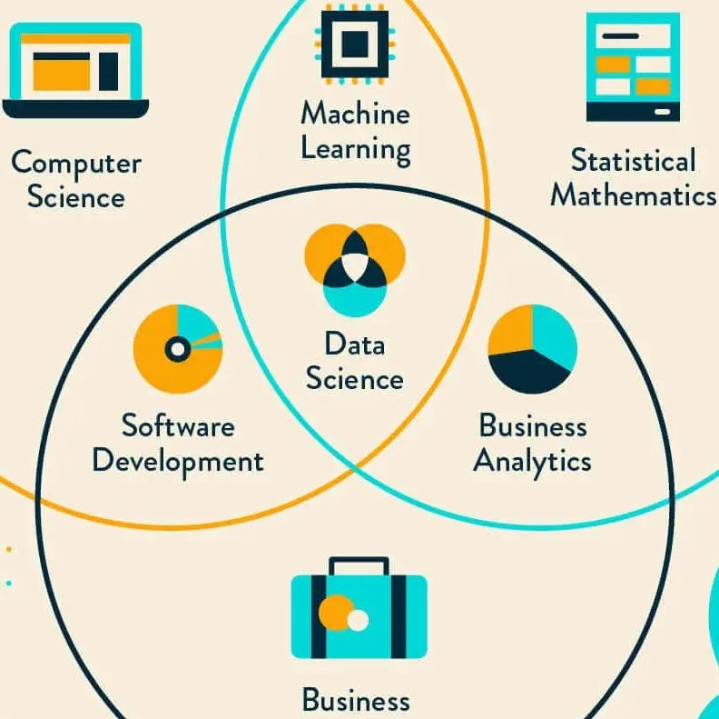

About Me
Hey there! 👋 I'm Savitha, an ML/AI engineer who's obsessed with turning messy data into production systems that actually work.
My journey started with a Data Science degree at UT Dallas, but I quickly realized my true passion wasn't just training models—it was shipping them. That realization led me to pursue (and complete!) a Master's in Software Engineering at UWG, where I dove deep into building scalable, production-ready ML systems.
These days, I'm at Sanmina Corporation engineering LLM-powered intelligence pipelines, forecasting models across 100+ business segments, and building pricing systems that save real time and money. Whether it's containerizing with Docker, deploying on GCP, or optimizing FastAPI endpoints to sub-300ms latency, I love the entire journey from notebook to production.
When I'm not wrangling data or debugging deployment pipelines, you'll find me creating pointillism art (because apparently I enjoy pixel-level precision in both code and art), strategically planning my next Township empire, baking with the kind of measurement precision that would make any data scientist proud, or perfecting my makeup—which I genuinely believe is just another form of algorithmic optimization, but for faces.
Currently seeking: Full-time ML/AI Engineer roles where I can build intelligent systems that drive business impact.

Education
- August 2018 - May 2022
-
UNIVERSITY OF TEXAS AT DALLAS
-
B.Sc. in Data Science
- August 2023 - July 2025
-
UNIVERSITY OF WEST GEORGIA
-
M.Sc. in Applied Computer Science: Software Engineering